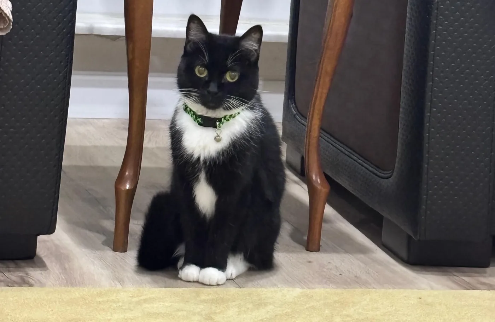
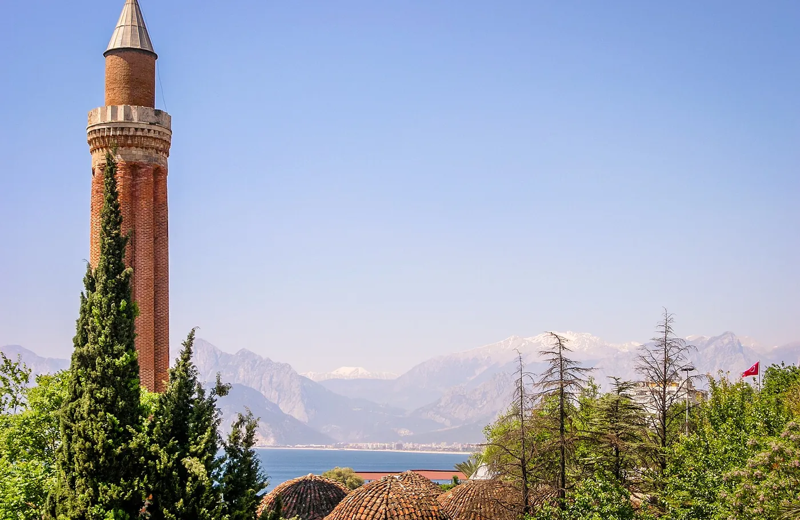
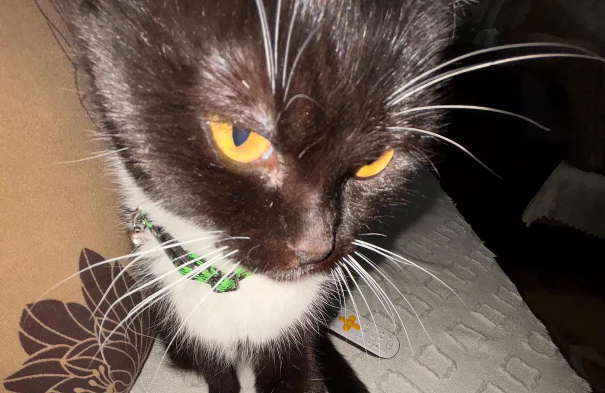
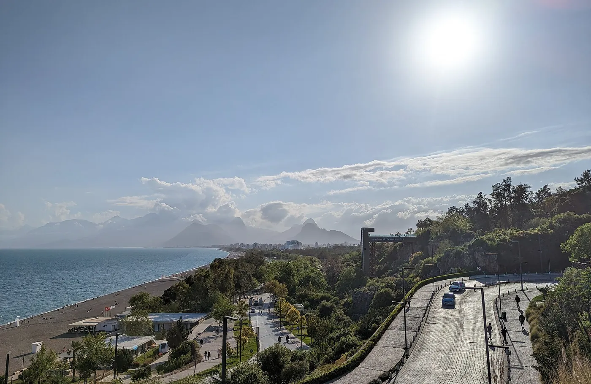
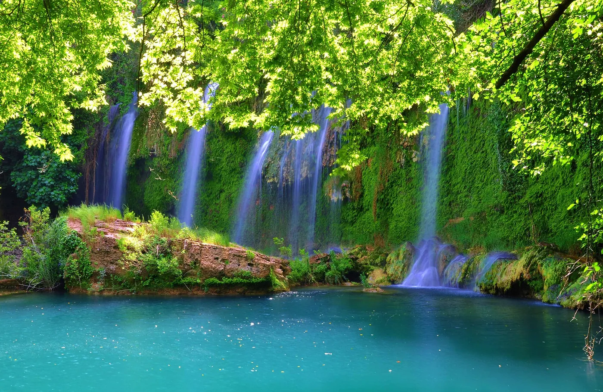

Ben
Kendi fotoğrafım.
Kendimden, kedim Kömür'den ve yaşadığım şehir Antalya'dan kareler.
Kendi fotoğrafım.

Masaüstü uygulamama adını ve görünüşünü veren kedim.


Kömür sandalyede dinlenirken.


Masanın altında, objektife bakarken.


Kömür kameraya çok yaklaşınca.

Kaleiçi'ne açılan, 2. yüzyıldan kalma Roma kapısı.

Kömür'ün meraklı bakışları.


Şehrin biraz dışında, yeşillikler içinde bir şelale.